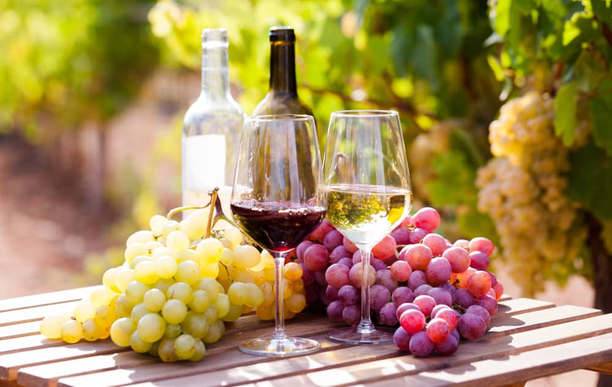

Digital wine: La nueva era para vender Vinos Online
¿Cansado de depender solo de tiendas físicas y catas presenciales? El mercado del vino se ha movido
online, pero la experiencia de compra sigue siendo impersonal y genérica. Digital Wine convierte la
venta digital en una experiencia premium que enamora a tus clientes.

Nuestra propuesta de valor
Digital Wine no es una tienda online más. Es tu equipo de ventas digital 24/7
Catalogo Inteligente: Cada vino cuenta su historia, testimonio de expertos y maridajes interactivos
Asistente de Ventas: Recomienda el vino perfecto baso en el gusto, ocacion y presupuesto del cliente
Marketing Personalizado: Camapañas automáticas que convierten compradores ocasionales en coleccionistas